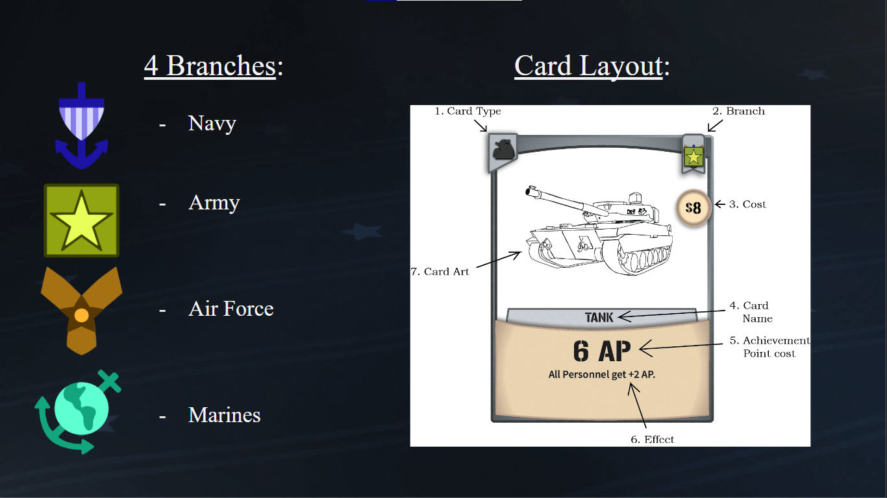
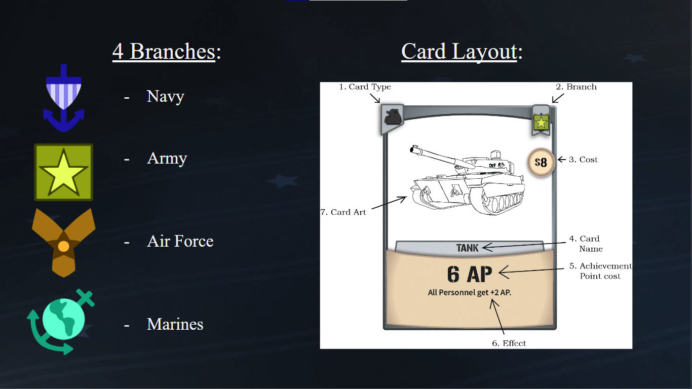

Spring Steel Spring Ninja
Role: Main Programmer
Platform: PC
Software: Unity
Game Jam: UAT Founder's Game Jam, September 2022
Theme: Spring
Award Won: Best Audio
This was my first Game Jam game. I worked in a group of 8 to create a platformer with stealth elements.
I was the only programmer for this project because I was the only one with experience in programming in
Unity. As such, I was the one who put the game together and made the entire game functional. One of the
biggest Unity features that I learned how to use was how to carry data from one scene to another, and
this would become very useful for later Jams. My biggest challenge with this game was animating with 3D
models. We used 3D models to animate the characters, and the process was a little bit different from
animating 2D sprites. The biggest hurdle to overcome with animating the character was that the character
would be rotated during certain animations for some reason, and I had to figure out how to fix it.
Click this link to download and play it.
Spring Steel Spring Ninja is a 2D stealth platformer created in a group of 8. You play as a ninja that jumps through
eight levels while avoiding being seen by enemies.
Spring Steel Spring Ninja was created in Unity using C# as the scripting language.
The art uses a mix of 2D and 3D. The characters are 3D models while everything else is 2D sprites.
Click this link to download and play it.


 
